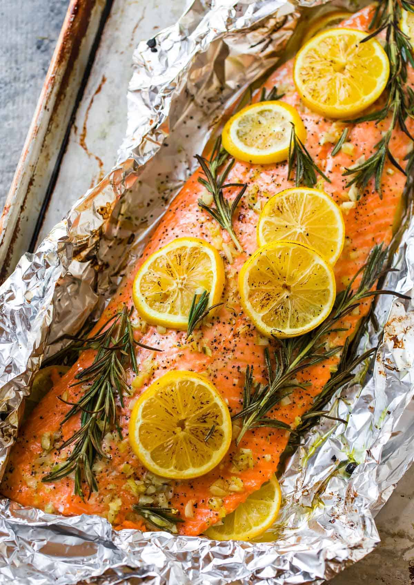

Baked Salmon

Description
This is the very best, Easy Healthy Baked Salmon! Made with lemon and garlic for incredible flavor and baked in the oven for flaky tenderness, this tasty salmon recipe is the answer to busy nights and special occasions alike!
Here’s the thing. I really really love salmon. Enough that I’ve said a few times out loud that if I had to choose one type of animal-based protein to live on for the rest of my life, it would be salmon. I make a lot of chicken dishes, and I can put away a thick, juicy steak like it’s nobody’s business, but if it ever comes right down to it I’m choosing salmon.
Ingredients
- salmon fillets
- olive oil
- salt
- cracked black pepper
- minced garlic
- herb seasonimg blend
- lemon
Steps
- Preheat the oven to 400 degrees and grease a large baking pan. Arrange the salmon fillets on the baking sheet and season generously with salt and pepper.
- Stir together the olive oil, garlic, herbs, and juice of 1/2 of the lemon. Spoon this sauce over salmon fillets, being sure to rub all over the tops and sides of the salmon so it has no dry spots. Thinly slice the remaining 1/2 of the lemon and top each piece of salmon with a slice of lemon.
- Bake the salmon in the oven for 15-18 minutes or until the salmon is opaque and flaky when pulled apart with a fork. You can broil the last 1-2 minutes if desired.
- Garnish with fresh thyme or parsley if desired and serve.